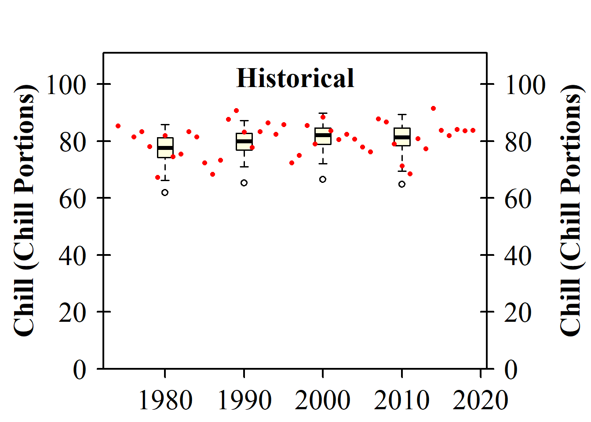

Chapter 16 Making CMIP6 scenarios
Running this code requires chillR version >= 0.76, which is available on CRAN. Earlier versions should not be used for CMIP6 projections.
16.1 Learning goals for this lesson
- Learn how to download future temperature projections for a CMIP6 ensemble from the Copernicus database
- Be able to produce synthetic temperature scenarios for an ensemble of future climate scenarios
- Transfer knowledge you gained earlier to compute temperature-based agroclimatic metrics for all the historic temperature records, as well as for past and future temperature scenarios
- Learn how to plot all your results in a concise manner
16.2 Accessing gridded climate data from the Copernicus climate data store
Most future climate data comes in the form of grids, meaning that to obtain information for a specific location, large files containing data for other locations must often be downloaded. For CMIP5 scenarios, the ClimateWizard API allowed access to specific point locations. However, a similar tool is not available for CMIP6 scenarios, which are currently the most advanced. As a result, downloading gridded data may be necessary, though it is more cumbersome than using ClimateWizard.
The Copernicus Climate Data Store (CDS), maintained by the European Centre for Medium-Range Weather Forecasts, offers a reliable source of future climate data. To access this data, an API key and user ID are required. Users must create a free account on the CDS website to obtain these credentials. After registration, navigate to the user profile to retrieve the User ID and Access Token. After agreeing to the Terms of Use, the code will work to download the data.
16.2.1 Downloading future climate data
To download data using the download_cmip6_ecmwfr function, the download area must be specified. The data will be saved locally, so it is important to carefully choose the extent. A small extent can be selected if only data for a single station is needed, while a larger area should be chosen for multiple stations, especially if they are close together.
For example, for Bonn (located at approximately 7.1°E, 50.8°N), a small extent can be selected around this location. The extent is specified as a vector in the format:
c(maximum latitude,minimum longitude,minimum latitude,maximum longitude)
This allows for downloading the required data and storing it locally to avoid future downloads.
The download_cmip6_ecmwfr function includes a default set of models, which can be used for downloading data. In this case, data for SSP1 (ssp126) will be selected for the download. By using this function, it is possible to specify the models and scenarios needed, while focusing on the specific SSP scenario of interest for the analysis.
download_cmip6_ecmwfr(
scenarios = 'ssp126',
area = area,
user = 'write user id here',
key = 'write key here',
model = 'default',
frequency = 'monthly',
variable = c('Tmin', 'Tmax'),
year_start = 2015,
year_end = 2100)After running the download_cmip6_ecmwfr function, several files are generated in a subfolder of the working directory, typically named cmip6_downloaded, unless the folder name is specified using the path_download parameter. If the function encounters models for which no data is available based on the provided specifications, a message about “Dropped models” appears. These models are blacklisted to prevent future download attempts, and a note is added to the download folder.
Once the initial download is successful, additional SSP scenarios can be downloaded by providing a vector of scenarios to the scenarios parameter. For example, SSP126, SSP245, SSP370, and SSP585 can be selected. Since the function automatically detects previously downloaded data, it will skip any files that are already present, allowing for efficient downloading without redundancy.
16.2.2 Generating change scenarios
The data downloaded so far, stored in the cmip6_downloaded/52_6_50_8 folder, represents future climate projections starting from 2015. However, these data are based on coarse-resolution climate models, where each pixel averages large areas, potentially including diverse landscapes like rivers, mountains, and coastal regions. As a result, these projections may not accurately represent the local temperature conditions of a specific place.
For site-specific analyses, such coarse data might not be sufficient. Although landscape features significantly influence rainfall patterns, their effect on temperature dynamics is less pronounced. Therefore, while the future temperature data might not be directly usable, the temperature change projected by these models can still be useful. For example, if a model projects a 2°C increase in January temperatures for a future scenario, this change can be added to current temperature observations.
However, it’s crucial to determine what “today” refers to when discussing climate change. The baseline temperature used for comparison affects the projected warming. A 2°C increase applied to a cooler climate from 1850 will be different from applying it to today’s warmer conditions. In the chillR workflow for CMIP6 data, the default baseline period is 1986-2014, as this period is available in the Copernicus database, represents a good median year (2000), and is close to the 30 years commonly used by climate scientists for robust climatology.
To generate accurate change scenarios, it’s essential to subtract the conditions during the baseline period from the future projections, ensuring that both the baseline and future data come from the same climate model. Historical data for the same models can be retrieved using the download_baseline_cmip6_ecmwfr function.
download_baseline_cmip6_ecmwfr(
area = area,
user = 'write user id here'
key = 'write key here',
model = 'match_downloaded',
frequency = 'monthly',
variable = c('Tmin', 'Tmax'),
year_start = 1986,
year_end = 2014,
month = 1:12)By specifying models = match_downloaded, the function will automatically identify the downloaded models and retrieve the corresponding baseline data.
16.2.3 Extracting data from the grids
The downloaded data is still in a gridded format, so the data for the specific location needs to be extracted. A small data.frame is created containing the station name and coordinates for Bonn. While additional stations could be added, only Bonn is considered in this case. The extract_cmip6_data function is then used to extract the data for the specified location.
station <- data.frame(
station_name = c("Bonn"),
longitude = c(7.1),
latitude = c(50.8))
extracted <- extract_cmip6_data(stations = station)Let’s look at some of the data for one of the climate models.
| Date | Year | Month | Day | lat | lon | location | model | ssp | Tmin | Tmax |
|---|---|---|---|---|---|---|---|---|---|---|
| 2015-01-16 | 2015 | 1 | 16 | 50.9608 | 7.5 | Bonn | AWI-CM-1-1-MR | ssp126 | -13.6960 | 10.8620 |
| 2015-02-15 | 2015 | 2 | 15 | 50.9608 | 7.5 | Bonn | AWI-CM-1-1-MR | ssp126 | -3.2364 | 12.8374 |
| 2015-03-16 | 2015 | 3 | 16 | 50.9608 | 7.5 | Bonn | AWI-CM-1-1-MR | ssp126 | -2.8993 | 13.5311 |
| 2015-04-16 | 2015 | 4 | 16 | 50.9608 | 7.5 | Bonn | AWI-CM-1-1-MR | ssp126 | 0.0531 | 21.7272 |
| 2015-05-16 | 2015 | 5 | 16 | 50.9608 | 7.5 | Bonn | AWI-CM-1-1-MR | ssp126 | 3.9305 | 22.6927 |
| 2015-06-16 | 2015 | 6 | 16 | 50.9608 | 7.5 | Bonn | AWI-CM-1-1-MR | ssp126 | 7.7302 | 24.7364 |
Since the baseline data is stored in the same folder, a compact call can now be used to generate change scenarios for all the climate projections in that folder.
| location | Month | Tmax | Tmin | scenario | start_year | end_year | scenario_year | reference_year | scenario_type | labels |
|---|---|---|---|---|---|---|---|---|---|---|
| Bonn | 1 | 1.826612 | 1.803455 | ssp126 | 2035 | 2065 | 2050 | 2000 | relative | ACCESS-CM2 |
| Bonn | 2 | 2.765976 | 2.179606 | ssp126 | 2035 | 2065 | 2050 | 2000 | relative | ACCESS-CM2 |
| Bonn | 3 | 1.485612 | 1.170670 | ssp126 | 2035 | 2065 | 2050 | 2000 | relative | ACCESS-CM2 |
| Bonn | 4 | 1.501575 | 1.264827 | ssp126 | 2035 | 2065 | 2050 | 2000 | relative | ACCESS-CM2 |
| Bonn | 5 | 1.733385 | 1.485717 | ssp126 | 2035 | 2065 | 2050 | 2000 | relative | ACCESS-CM2 |
| Bonn | 6 | 1.808780 | 1.506125 | ssp126 | 2035 | 2065 | 2050 | 2000 | relative | ACCESS-CM2 |
The data is stored in a single long data frame, which can easily be saved as a csv file. While this format isn’t directly compatible with the weather generator, chillR provides a conversion function called convert_scen_information. This function extracts the relevant information and creates scenarios that are compatible with the temperature_generation function.
write.csv(change_scenarios, "data/all_change_scenarios.csv", row.names = FALSE)
scen_list <- convert_scen_information(change_scenarios)The convert_scen_information function can also be used to convert the list back into the data.frame format, making it easier to work with for further analysis or processing.
Let’s look at one of the elements in the scenario lists.
## $data
## Tmin Tmax
## 1 1.803455 1.826612
## 2 2.179606 2.765976
## 3 1.170670 1.485612
## 4 1.264827 1.501575
## 5 1.485717 1.733385
## 6 1.506125 1.808780
## 7 2.047910 2.668619
## 8 1.654944 2.754484
## 9 2.388600 3.323390
## 10 2.540916 2.722248
## 11 2.322483 2.434944
## 12 2.737679 2.713174
##
## $scenario
## [1] "ssp126"
##
## $start_year
## [1] 2035
##
## $end_year
## [1] 2065
##
## $scenario_year
## [1] 2050
##
## $reference_year
## [1] 2000
##
## $scenario_type
## [1] "relative"
##
## $labels
## [1] "ACCESS-CM2"The scenario includes changes for the mean daily minimum and maximum temperatures for each month, along with several key pieces of information. The scenario specifies the SSP scenario, scenario_type indicates that this is a relative scenario, and labels contain the name of the GCM. The four attributes related to years—start_year, end_year, and scenario_year—define the time slice for the scenario. In this case, the scenario covers a 31-year period (2035-2065), with the median year (2050) being the scenario_year, which represents the year most typical for the scenario. The reference_year is also crucial, as it specifies the year to which the temperature change is relative—in this case, the changes are relative to conditions in 2000.
16.2.4 Baseline adjustment
To produce future scenarios, while ensuring that the weather generator simulates temperatures for Bonn specifically, the observed data from Bonn can be used as input. This approach ensures that the temperatures generated reflect local conditions, rather than the average conditions from a GCM pixel. The weather generator can accommodate this, so the next step is to test it with one of the scenarios.
Bonn_temps<-read_tab("data/Bonn_temps.csv")
temperature_generation(Bonn_temps,
years = c(1973, 2019),
sim_years = c(2001, 2100),
scen_list$Bonn$ssp126$`ACCESS-CM2`)The attempt to use the weather generator with the scenario failed due to a mismatch in the reference years. The reference year for the weather station data is 1996, while the future projections have a reference year of 2000. One solution would be to use fewer observation years, such as from 1981 onward, to align the median year with 2000. However, if it’s important to include older data, chillR provides a tool to adjust the reference year based on temperature trends within the observed dataset.
To adjust the baseline of the observed weather, the first step is to calculate the warming (or cooling) that occurred in Bonn between 1996 and 2000. This can be done by determining typical temperature conditions for both years using the temperature_scenario_from_records function.
temps_1996 <- temperature_scenario_from_records(Bonn_temps,
1996)
temps_2000 <- temperature_scenario_from_records(Bonn_temps,
2000)
temps_1996## $`1996`
## $`1996`$data
## Tmin Tmax
## 1 0.05096808 5.997514
## 2 0.30177644 7.789863
## 3 2.64832507 11.855124
## 4 4.11737331 14.884386
## 5 7.96058170 20.280445
## 6 10.70945702 22.325216
## 7 12.69138958 24.926619
## 8 12.59137274 25.079171
## 9 9.55441331 19.960842
## 10 6.40661969 14.768213
## 11 2.82059109 9.308959
## 12 0.59133654 6.103919
##
## $`1996`$scenario_year
## [1] 1996
##
## $`1996`$reference_year
## [1] NA
##
## $`1996`$scenario_type
## [1] "absolute"
##
## $`1996`$labels
## [1] "running mean scenario"## $`2000`
## $`2000`$data
## Tmin Tmax
## 1 0.09999567 5.888243
## 2 0.49262403 7.189344
## 3 2.28327954 11.206499
## 4 4.71243331 15.764268
## 5 8.47223725 20.053640
## 6 11.06525924 22.935700
## 7 13.05258062 25.085306
## 8 12.50049711 24.345505
## 9 10.00307775 20.264008
## 10 6.84396341 15.241450
## 11 3.12942664 9.319114
## 12 0.75037488 6.036563
##
## $`2000`$scenario_year
## [1] 2000
##
## $`2000`$reference_year
## [1] NA
##
## $`2000`$scenario_type
## [1] "absolute"
##
## $`2000`$labels
## [1] "running mean scenario"The temperature scenarios for 1996 and 2000 are absolute scenarios, describing typical temperature conditions for each year. Using these, a relative change scenario can now be computed to represent the temperature changes that occurred over this period. This is done with the temperature_scenario_baseline_adjustment function, which adjusts the baseline based on the observed temperature trends between the two years.
## $`2000`
## $`2000`$data
## Tmin Tmax
## 1 0.04902759 -0.10927019
## 2 0.19084759 -0.60051936
## 3 -0.36504552 -0.64862502
## 4 0.59506000 0.87988164
## 5 0.51165555 -0.22680567
## 6 0.35580222 0.61048386
## 7 0.36119103 0.15868680
## 8 -0.09087563 -0.73366588
## 9 0.44866444 0.30316609
## 10 0.43734372 0.47323734
## 11 0.30883555 0.01015498
## 12 0.15903835 -0.06735621
##
## $`2000`$scenario_year
## [1] 2000
##
## $`2000`$reference_year
## [1] 1996
##
## $`2000`$scenario_type
## [1] "relative"
##
## $`2000`$labels
## [1] "running mean scenario"The baseline correction can now be applied to the climate scenarios. Since this process currently only works with an unstructured list of scenarios, the scenarios must first be converted using the give_structure = FALSE option before applying the correction.
scen_list <- convert_scen_information(change_scenarios,
give_structure = FALSE)
adjusted_list <-
temperature_scenario_baseline_adjustment(
base,
scen_list,
temperature_check_args =
list( scenario_check_thresholds = c(-5, 15)))The temperature generation process can now begin. Given the large number of scenarios, it may take hours to complete. While this might seem like a long time, it’s important to remember that the computer is handling numerous operations that would otherwise be done manually.
temps <- temperature_generation(Bonn_temps,
years = c(1973, 2019),
sim_years = c(2001, 2100),
adjusted_list,
temperature_check_args =
list( scenario_check_thresholds = c(-5, 15)))
save_temperature_scenarios(temps,
"data/future_climate",
"Bonn_futuretemps")It’s important to save the data now to avoid waiting for the process to run again in the future.
Next, temperature responses can be calculated efficiently using the tempResponse_daily_list function. For this calculation, three models are selected: the Dynamic Model for chill accumulation, the GDH model for heat accumulation, and a simple model to compute frost hours.
frost_model <- function(x)
step_model(x,
data.frame(
lower = c(-1000, 0),
upper = c(0, 1000),
weight = c(1, 0)))
models <- list(Chill_Portions = Dynamic_Model,
GDH = GDH,
Frost_H = frost_model)chill_future_scenario_list <- tempResponse_daily_list(temps,
latitude = 50.8,
Start_JDay = 305,
End_JDay = 59,
models = models)
chill_future_scenario_list <- lapply(chill_future_scenario_list,
function(x) x %>%
filter(Perc_complete == 100))
save_temperature_scenarios(chill_future_scenario_list,
"data/future_climate",
"Bonn_futurechill_305_59")To facilitate plotting later, climate scenarios are first generated using the make_climate_scenario function in chillR. The plotting function will process a list of these scenarios. The starting point is a historic scenario, which includes both distributions for historical years and the observed chill. These records, ideally saved in the “Historic temperature scenarios” lesson, are now loaded for further use.
chill_hist_scenario_list<-load_temperature_scenarios("data",
"Bonn_hist_chill_305_59")
observed_chill <- read_tab("data/Bonn_observed_chill_305_59.csv")
chills <- make_climate_scenario(
chill_hist_scenario_list,
caption = "Historical",
historic_data = observed_chill,
time_series = TRUE)
plot_climate_scenarios(
climate_scenario_list = chills,
metric = "Chill_Portions",
metric_label = "Chill (Chill Portions)")
## [[1]]
## [1] "time series labels"The function had two outcomes: it generated a plot and returned a brief list with the message “time series labels.” While this message may not be of immediate interest, it will contain more relevant content later. To store the information without displaying the plot, the plotting command can be assigned to a new object (e.g., info <- plot_climate_scenarios(...)), allowing the function to produce the plot as a side effect.
The same process is repeated for all future climate scenarios. For each scenario, it is added to the chills object using the make_climate_scenario function’s add_to argument. Before proceeding, the data must first be sorted by the specific combinations of SSP and time.
SSPs <- c("ssp126", "ssp245", "ssp370", "ssp585")
Times <- c(2050, 2085)
list_ssp <-
strsplit(names(chill_future_scenario_list), '\\.') %>%
map(2) %>%
unlist()
list_gcm <-
strsplit(names(chill_future_scenario_list), '\\.') %>%
map(3) %>%
unlist()
list_time <-
strsplit(names(chill_future_scenario_list), '\\.') %>%
map(4) %>%
unlist()
for(SSP in SSPs)
for(Time in Times)
{
# find all scenarios for the ssp and time
chill <- chill_future_scenario_list[list_ssp == SSP & list_time == Time]
names(chill) <- list_gcm[list_ssp == SSP & list_time == Time]
if(SSP == "ssp126") SSPcaption <- "SSP1"
if(SSP == "ssp245") SSPcaption <- "SSP2"
if(SSP == "ssp370") SSPcaption <- "SSP3"
if(SSP == "ssp585") SSPcaption <- "SSP5"
if(Time == "2050") Time_caption <- "2050"
if(Time == "2085") Time_caption <- "2085"
chills <- chill %>%
make_climate_scenario(
caption = c(SSPcaption,
Time_caption),
add_to = chills)
}At this point, all the necessary data and steps are in place to plot the results of the climate change analysis:
info_chill <-
plot_climate_scenarios(
climate_scenario_list = chills,
metric = "Chill_Portions",
metric_label = "Chill (Chill Portions)",
texcex = 1.5)
info_heat <-
plot_climate_scenarios(
climate_scenario_list = chills,
metric = "GDH",
metric_label = "Heat (Growing Degree Hours)",
texcex = 1.5)
info_frost <-
plot_climate_scenarios(
climate_scenario_list=chills,
metric="Frost_H",
metric_label="Frost hours",
texcex=1.5)
Now that everything is set up, the trends in chill and heat accumulation, as well as in frost hours for Klein-Altendorf, can be visualized. The function not only produces the plot but also returns supplementary information, which was stored in the info objects. By inspecting these objects, it is possible to see the names of the climate models for each subplot, along with the time series labels for the historic plot. Since the same models were used for each scenario, this information is repeated multiple times. To avoid redundancy, it’s best to review this data once, focusing on just one of the plots.
| code | Label |
|---|---|
| 1 | CMCC-ESM2 |
| 2 | ACCESS-CM2 |
| 3 | AWI-CM-1-1-MR |
| 4 | MIROC6 |
| 5 | FIO-ESM-2-0 |
| 6 | CNRM-CM6-1-HR |
| 7 | INM-CM5-0 |
| 8 | NESM3 |
| 9 | EC-Earth3-Veg-LR |
| 10 | GFDL-ESM4 |
| 11 | MPI-ESM1-2-LR |
| 12 | CNRM-ESM2-1 |
| 13 | IPSL-CM6A-LR |
| 14 | FGOALS-g3 |
| 15 | INM-CM4-8 |
| 16 | MRI-ESM2-0 |
The labels are not included directly in the plot to avoid overcrowding the visualization. Instead, each model is represented by a number, with a key provided in a separate table to explain these number codes.
If the design of the figure is not preferred, a customized version can be created later. Additionally, a more modern version of the plot, available in chillR, will be explored in later steps.
16.3 Exercises on generating CMIP6 temperature scenarios
Please document all results of the following assignments in your learning logbook.
- Analyze the historic and future impact of climate change on two agroclimatic metrics of your choice, for the location you’ve chosen for your earlier analyses.
# set location
location = c(-120.5, 46.6)
area <- c(48, -122 , 45, -119)
# download scenarios
download_cmip6_ecmwfr(
scenarios = c("ssp126", "ssp245", "ssp370", "ssp585"),
area = c(49, -122 , 44, -118),
user = 'd78103f2-834f-468c-94f0-8b7064c75df7',
key = 'ac66d05a-e82b-42d1-9a8d-a94c1afb9fb9',
model = 'default',
frequency = 'monthly',
variable = c('Tmin', 'Tmax'),
year_start = 2015,
year_end = 2100)
# download baseline
download_baseline_cmip6_ecmwfr(
area = c(49, -122 , 44, -118),
user = 'd78103f2-834f-468c-94f0-8b7064c75df7',
key = 'ac66d05a-e82b-42d1-9a8d-a94c1afb9fb9',
model = 'match_downloaded',
frequency = 'monthly',
variable = c('Tmin', 'Tmax'),
year_start = 1986,
year_end = 2014,
month = 1:12)
#
station <- data.frame(
station_name = c("Yakima"),
longitude = c(-120.5),
latitude = c(46.6))
extracted <- extract_cmip6_data(stations = station,
download_path = "cmip6_downloaded/49_-122_44_-118")
change_scenarios <- gen_rel_change_scenario(extracted)
scen_list <- convert_scen_information(change_scenarios)
temps_1996 <- temperature_scenario_from_records(Yakima_temps,
1996)
temps_2000 <- temperature_scenario_from_records(Yakima_temps,
2000)
base <- temperature_scenario_baseline_adjustment(temps_1996,
temps_2000)
scen_list <- convert_scen_information(change_scenarios,
give_structure = FALSE)
adjusted_list <- temperature_scenario_baseline_adjustment(base,
scen_list,
temperature_check_args =
list(scenario_check_thresholds = c(-5, 15)))
for(scen in 1:length(adjusted_list))
{
if(!file.exists(paste0("Yakima/future_climate/Yakima_future_",
scen,"_",
names(adjusted_list)[scen],".csv")) )
{temp_temp <- temperature_generation(Yakima_temps,
years = c(1973, 2019),
sim_years = c(2001, 2100),
adjusted_list[scen],
temperature_check_args =
list( scenario_check_thresholds = c(-5, 15)))
write.csv(temp_temp[[1]],paste0("Yakima/future_climate/Yakima_future_",scen,"_",names(adjusted_list)[scen],".csv"),
row.names=FALSE)
print(paste("Processed object",scen,"of", length(adjusted_list)))
}
}
frost_model <- function(x)
step_model(x,
data.frame(
lower=c(-1000,0),
upper=c(0,1000),
weight=c(1,0)))
models <- list(Chill_Portions = Dynamic_Model,
GDH = GDH,
Frost_H = frost_model)
temps <- load_temperature_scenarios("Yakima/future_climate","Yakima_future_")
chill_future_scenario_list <- tempResponse_daily_list(temps,
latitude = 46.6,
Start_JDay = 305,
End_JDay = 59,
models = models)
chill_future_scenario_list <- lapply(chill_future_scenario_list,
function(x) x %>%
filter(Perc_complete == 100))
save_temperature_scenarios(chill_future_scenario_list,
"Yakima/future_climate",
"Yakima_futurechill_305_59")
chill_hist_scenario_list <- load_temperature_scenarios("Yakima",
"Yakima_hist_chill_305_59")
observed_chill <- read_tab("Yakima/Yakima_observed_chill_305_59.csv")
chills <- make_climate_scenario(
chill_hist_scenario_list,
caption = "Historic",
historic_data = observed_chill,
time_series = TRUE)
plot_climate_scenarios(
climate_scenario_list = chills,
metric = "Chill_Portions",
metric_label = "Chill (Chill Portions)")
SSPs <- c("ssp126", "ssp245", "ssp370", "ssp585")
Times <- c(2050, 2085)
list_ssp <-
strsplit(names(chill_future_scenario_list), '\\.') %>%
map(2) %>%
unlist()
list_gcm <-
strsplit(names(chill_future_scenario_list), '\\.') %>%
map(3) %>%
unlist()
list_time <-
strsplit(names(chill_future_scenario_list), '\\.') %>%
map(4) %>%
unlist()
for(SSP in SSPs)
for(Time in Times)
{
chill <- chill_future_scenario_list[list_ssp == SSP & list_time == Time]
names(chill) <- list_gcm[list_ssp == SSP & list_time == Time]
if(SSP == "ssp126") SSPcaption <- "SSP1"
if(SSP == "ssp245") SSPcaption <- "SSP2"
if(SSP == "ssp370") SSPcaption <- "SSP3"
if(SSP == "ssp585") SSPcaption <- "SSP5"
if(Time == "2050") Time_caption <- "2050"
if(Time == "2085") Time_caption <- "2085"
chills <- chill %>%
make_climate_scenario(
caption = c(SSPcaption,
Time_caption),
add_to = chills)
}
# Plot chill hours
info_chill <-
plot_climate_scenarios(
climate_scenario_list = chills,
metric = "Chill_Portions",
metric_label = "Chill (Chill Portions)",
texcex = 1.5)
# Plot Heat (Growing degree hours)
info_heat <-
plot_climate_scenarios(
climate_scenario_list = chills,
metric = "GDH",
metric_label = "Heat (Growing Degree Hours)",
texcex = 1.5)